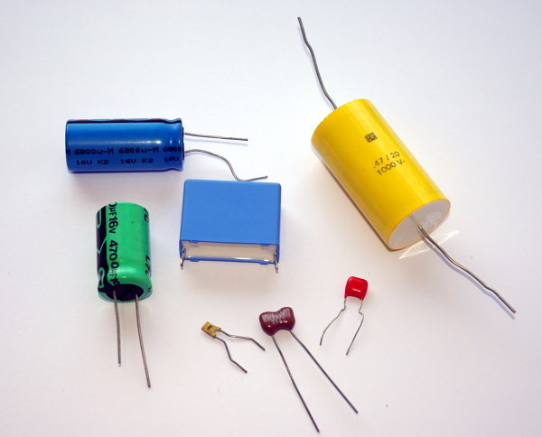

Em 1745, o holandês Pieter van
Musschenbroek inventou o primeiro
condensador. Enquanto usava uma garrafa de
vidro para isolar uma lâmina metálica no seuinterior, descobriu que
quando segurava a garrafa na mão, a carga elétrica que conseguia
armazenar na lâmina era muito maior do que quando a garrafa estava
sobre a mesa. A explicação é que na mão, que é um condutor,
são induzidas cargas de sinal contrário que atraem
as cargas no metal, permitindo que seja mais fácil introduzir mais
cargas do mesmo sinal. Colocando uma segunda lâmina metálica por fora
da garrafa, facilita-se a entrada de cargas na garrafa, podendo ser
armazenadas cargas muito elevadas. O condensador de van Musschenbroek ficou conhecido como garrafa de Leiden,
que é a cidade onde trabalhou. Trata-se de
uma das invenções mais importantes da história da eletricidade, que
permitiu acumular cargas maiores, facilitando a realização de
experiências de eletrostática.
4.1. Capacidade de um condutor isolado
O potencial num condutor isolado é uniforme em todo o condutor e
proporcional à carga total nele. Define-se a
capacidade do condutor como a razão entre a
carga e o potencial na superfície do condutor
(4.1)
A capacidade não depende da carga nem do potencial, pois os dois
aumentam na mesma proporção; a capacidade depende unicamente da forma
e tamanho do condutor. O potencial
é realmente a
diferença de potencial entre a superfície do condutor e um ponto no
infinito, onde costuma arbitrar-se potencial igual a zero.
No sistema internacional de unidades, a unidade para medir capacidade
elétrica é o farad, em homenagem ao cientista
Michael Faraday (1791–1867). O farad,
representado pela letra F, é a capacidade de um condutor que, com uma
carga de 1 C, tem um potencial de 1 V:
(4.2)
Uma capacidade de 1 F é muito elevada, sendo comum encontrarem-se na
prática capacidades da ordem de 1 µF, 1 nF ou 1 pF.
4.2. Esfera condutora isolada
Figura 4.1: Esfera condutora.
Numa esfera condutora isolada (figura 4.1), toda a carga se
acumula na superfície, de forma uniforme, devido à simetria da
esfera. No apêndice B mostra-se como calcular o
campo elétrico e o resultado é que, dentro da esfera o campo é nulo e
fora dela o campo é idêntico ao campo de uma carga pontual
colocada no centro da esfera. O módulo do campo elétrico num ponto que
se encontra a uma distância
do centro da esfera é:
(4.3)
onde
é a constante de Coulomb (9.00×109
N·m2/C2) e
é a constante dielétrica do meio à volta da
esfera. A figura 4.2 mostra o gráfico do módulo do campo em
função da distância até o centro, no caso em que a carga é positiva.
Figura 4.2: Gráfico do módulo do campo elétrico deuma esfera condutora
isolada.
Para calcular
integra-se a componente tangencial do
campo elétrico, desde a superfície da esfera até o infinito, ao longo
de qualquer percurso; um percurso que facilita o cálculo é na direção
e sentido radial, que é a direção das linhas de campo elétrico:
(4.4)
O valor deste integral é também igual à área sombreada na
figura 4.2. Usando a expressão obtida para
,
encontra-se a expressão para a capacidade da esfera de raio
,
(4.5)
Observe-se que se
for negativa,
deveria ser substituída por
mas o resultado do integral na equação 4.4
é o mesmo porque, nesse caso, o sentido do campo seria oposto ao
sentido radial, introduzindo outro sinal negativo. O potencial na
superfície, em relação ao infinito, tem sempre o mesmo sinal da carga
e, como tal, a capacidade é sempre um número positivo.
Quanto maior for a esfera, maior será a sua capacidade. Já se referiu
anteriormente que a capacidade não depende da carga armazenada na
esfera, nem do potencial produzido por essa carga. A capacidade
depende apenas do tamanho e da forma geométrica do condutor e da
constante dielétrica do meio. Neste caso é diretamente proporcional ao
raio da esfera e à constante dielétrica do meio.
4.3. Condensadores
Na abertura do capítulo mencionou-se a garrafa de Leiden, que foi o
primeiro condensador construído na história. Os dois condutores
separados por um isolador (neste caso vidro), designam-se de
armaduras. Quando existem cargas numa das
armaduras são induzidas cargas de sinal contrário na outra armadura, o
que faz diminuir o potencial de cada armadura em relação ao potencial
de referência (a terra). A diminuição do
potencial do sistema de duas armaduras, comparado com o potencial que
teria uma única armadura com a mesma carga, implica uma capacidade
muito maior para o condensador em comparação com a capacidade de cada
uma das duas armaduras por separado.
Se uma das armaduras tiver carga
a outra tem carga
. Se
for a voltagem entre as duas armaduras, define-se a
capacidade do condensador como:
(4.6)
Se entre as duas armaduras é colocado um isolador, a constante de
coulomb,
, que entra no cálculo da diferença de potencial
, a partir da força, é substituída por
, onde
é a
constante dielétrica do isolador. Como
tal, com o isolador a capacidade do condensador aumenta de um fator
. Assim, na garrafa de Leiden a garrafa de vidro serve de isolador
e ajuda a aumentar a capacidade. Como o vidro tem uma constante
dielétrica de perto de 6, a capacidade com a garrafa de vidro é cerca
de 6 vezes a que se obtinha sem vidro entre as armaduras.
Quanto maior a capacidade de um condensador, mais fácil é armazenar
cargas nele. Existem vários modelos diferentes de condensadores, com
diferentes formas e tamanhos (figura 4.3).

Figura 4.3: Vários tipos diferentes de condensadores.
O isolador entre as armaduras de um condensador também se chama
dielétrico. O dielétrico também ajuda a aumentar a
diferença de potencial máxima que pode existir entre as
armaduras. Cada material isolador tem um valor da
rigidez dielétrica
(
) que é o campo elétrico máximo que suporta o
dielétrico sem se produzir rutura. A rutura de um dielétrico ocorre
quando as suas moléculas ou átomos são deformadas a tal ponto, que
algumas delas são ionizadas, formando-se fendas onde o material está
queimado e passa a ser condutor por causa dos iões depositados nessa
fendas. A figura 4.4 mostra um bloco de acrílico que foi
colocado entre duas armaduras com uma voltagem elevada, ultrapassando
a rigidez dielétrica do acrílico, produzindo a sua rutura. As fendas
onde o dielétrico foi queimado criam as chamadas figuras de
Lichtenberg
Figura 4.4: Bloco de acrílico após a rutura do dielétrico.
A diferença de potencial máxima que suporta um condensador com
dielétrico de espessura
sem se queimar é então,
(4.7)
onde
é a rigidez do dielétrico. Diferentes modelos de
condensadores (figura 4.3) têm diferentes capacidades e
diferenças de potencial máximas, conforme o tamanho e o dielétrico
utilizado. Em algumas aplicações também é importante que o tempo de
resposta do dielétrico seja rápido, já que as cargas não são induzidas
nas moléculas do dielétrico de forma instantânea. A
tabela 4.1 indica a constante dielétrica e a rigidez
dielétrica de vários materiais isoladores.
Tabela 4.1: Constante e rigidez de alguns dielétricos.
Material
Constante dielétrica,
Rigidez,
(kV/mm)
Água (20 °C)
80
—
Ar seco
1.00059
3
Óleo
2.24
12
Papel
3.7
16
Acrílico
3.4
40
Vidro pirex
5.6
14
Porcelana
7
5.7
Poliéster
2.55
24
Parafina
2.1– 2.5
10
A rigidez dielétrica do ar seco é 3 kV/mm. Quando a diferença de
potencial entre dois objetos no ar ultrapassa 3000 V por milímetro de
afastamento, dá-se uma descarga elétrica abrupta dos objetos. As
forças elétricas elevadas ionizam as moléculas do ar, e a descarga é a
passagem de iões positivos e negativos do ar entre os dois objetos.
As nuvens e a terra, que são condutores, atuam como as armaduras de um
condensador, sendo o ar o dielétrico. Durante uma trovoada, a humidade
do ar faz diminuir a rigidez dielétrica do ar e a diferença de
potencial máxima entre as nuvens e a terra diminui, existindo a
possibilidade de surgirem descargas elétricas
(figura 4.5). Quanto mais perto das nuvens estiverem os
objetos apoiados no chão, maior será a probabilidade de serem
atingidos por um raio, porque
é então menor.
Figura 4.5: Numa trovoada, a humidade do ar facilita as descargas elétricas.
4.3.1. Condensador esférico
Figura 4.6: Condensador esférico.
A figura 4.6 mostra um condensador esférico, formado por
duas armaduras esféricas concêntricas, de raios
e
,
separadas por um isolador de constante dielétrica
que ocupa o
espaço entre as duas esferas. A esfera menor está ligada a um fio que
passa para fora da esfera maior, sem tocá-la, de forma a poder-se
armazenar uma carga
numa das esferas e
na outra.
O campo produzido pelas duas esferas condutoras é dado pela expressão
obtida no apêndice B, substituindo
por
e
por
na equação B.14. Como a soma das duas cargas é
zero, o campo fora das duas esferas é nulo. O campo elétrico está
confinado à região entre as duas esferas, onde existe o dielétrico que
as separa. A expressão do campo (admitindo que
é positiva) é,
(4.8)
E a diferença de potencial entre as esferas é o integral do campo, no
sentido radial, entre as duas esferas:
(4.9)
Dividindo a carga,
, pela diferença de potencial,
,
obtém-se a expressão para a capacidade do condensador esférico:
(4.10)
4.3.2. Condensador plano
Um condensador plano é formado por duas
armaduras planas, de área
, paralelas e separadas por uma distância
constante
, como no lado esquerdo da figura 4.7. Se as
armaduras estão suficientemente próximas uma boa aproximação consiste
em considerar o condensador plano como uma pequena parte num
condensador esférico, com um raio muito grande, aproximando-se de
infinito, e as duas esferas aproximadamente com o mesmo raio, como
mostra a figura 4.7.
Figura 4.7: Condensador plano, condensador esférico muito grande e uma
pequena região que aproxima o condensador plano.
A carga e a área no condensador esférico muito grande aproximam-se de
infinito, mas a relação entre elas, carga superficial, permanece
finita. A equação 4.8 para o campo dentro do condensador
esférico deve ser escrita em função da carga superficial,
, e com
igual a
para obter o
campo na vizinhança da esfera; o campo dentro do condensador plano e
então, aproximadamente:
(4.11)
E a diferença de potencial entre as armaduras é igual a
(4.12)
onde
é a distância entre as armaduras,
a carga na armadura
positiva e
a área das armaduras. A partir da equação 4.6
obtém-se a expressão para a capacidade do condensador plano:
(4.13)
A capacidade de um condensador plano é diretamente proporcional à
constante dielétrica e à área das armaduras e inversamente
proporcional à distância entre elas.
Exemplo 4.1
Um condensador variável é constituído por
duas placas planas paralelas com forma de setor circular de ângulo 80°
e raio 5 cm, que podem rodar à volta de um eixo comum, como mostra a
figura. Se a distância entre as placas é 0.5 cm, calcule a capacidade
máxima e a capacidade quando uma das placas roda 30° a partir da
posição onde a capacidade é máxima.
Resolução. A capacidade máxima obtém-se quando as duas placas
estão completamente sobrepostas uma acima da outra, de forma que a carga
se distribui ao longo de toda a superfície das placas. O ângulo de
80° equivale a uma fração 80/360 do círculo completo; portanto, a
área das armaduras é:
A capacidade é dada pela expressão 4.13, com a constante
dielétrica do ar,
:
Quando uma das placas roda 30°, a área na qual a carga se
distribui, corresponde apenas à área da parte das placas que se encontra
sobreposta, ou seja, um setor circular de ângulo 50°. A área é
então 5/8 da área total das armaduras e a capacidade, sendo diretamente
proporcional à área, é 5/8 da capacidade máxima:
(4.14)
4.3.3. Ultracondensadores
Um condensador pode cumprir uma função semelhante à de uma bateria, já
que pode ser usado para armazenar cargas que são fornecidas a um
circuito. A grande vantagem é que, como não há reações químicas
envolvidas, a carga e descarga podem ser feitas muito rapidamente e o
condensador não fica inutilizado após várias cargas e descargas, que é
o que acontece a uma bateria recarregável. Imagine por exemplo que em
vez de ter que esperar algumas horas para recarregar a bateria do
telemóvel, esta ficasse imediatamente recarregada quando fosse ligada
à tomada, e que nunca tivesse que trocá-la por uma nova. Isso está
cada vez mais perto de ser uma realidade, com o desenvolvimento dos
ultracondensadores.
A dificuldade em usar um condensador normal como fonte é que à medida
que o condensador descarrega, a diferença de potencial entre as suas
armaduras decresce rapidamente. Uma desvantagem ainda maior é que a
capacidade de armazenar carga não é tão elevada como nas
baterias. Considere-se por exemplo a pilha recarregável no
problema 4 do capítulo 2. O valor da f.e.m. é 1.2 V e a carga
máxima armazenada é de 2300 mA·h = 8.28 kC. De acordo com a
equação 4.6, seria necessário um condensador de 6.9 kF para
armazenar essa carga, com essa diferença de potencial.
Uma capacidade tão elevada era algo impensável, até finais do século
passado. Um condensador tradicional, do tamanho dessa pilha, teria uma
capacidade da ordem dos µF. Os condensadores eletrolíticos atinge
capacidades superiores, mas ainda aquém dos quilo-farad. Recentemente
têm sido produzidos ultracondensadores, com capacidades
muito mais elevadas, na ordem dos quilo-farad (figura 4.8).
Figura 4.8: Alguns ultracondensadores.
Por exemplo, o ultracondensador cilíndrico situado à frente na
figura 4.8, tem uma capacidade de 3000 farads a 2.7
volts. Com esses valores, a carga que se consegue armazenar é de 8.1
kC já muito próximo da carga de uma pilha recarregável. A capacidade
elevada também implica que demora muito mais a descarregar quando é
ligado a um circuito. Ainda falta reduzir um pouco o tamanho para que
seja competitivo com as atuais baterias de iões de lítio.
Nos ultracondensadores usa-se um meio poroso para substituir uma das
armaduras. A área de contacto entre elétrodos e eletrólito é muito
elevada. Os ultracondensadores são já utilizados em combinação com os
motores elétricos dos automóveis que funcionam a hidrogénio com
células de combustível (figura 4.9) e que já estão a ser
comercializados em alguns países.
Figura 4.9: Autocarro experimental a hidrogénio da STCP no Porto.
O ultracondensador permite acumular rapidamente as cargas produzidas
pelas células de combustível ou pelos travões eletromagnéticos, e essa
carga pode ser fornecida rapidamente, nos momentos em que é necessário
acelerar. As únicas reações químicas produzidas nesse tipo de veículo
é a combinação do hidrogénio com o oxigénio nas células de
combustível, que produz vapor de água. Não são libertados gases
nocivos para a atmosfera, nem existem baterias a produzir produtos
químicos corrosivos.
Os ultracondensadores podem fornecer carga e serem recarregados muito
mais rapidamente do que uma bateria e sem sofrer o desgaste que faz
com que a bateria tenha um número limitado de ciclos de carga e
descarga.
4.4. Energia elétrica armazenada num condensador
Para carregar um condensador, é necessário carregar uma das armaduras
com carga
e a outra com carga
. O processo implica uma
transferência de carga
de uma armadura para a outra. Essa passagem
pode ser feita por ligação de dois cabos nas armaduras e nos terminais
de uma bateria (figura 4.10).
Figura 4.10: Passagem da carga de uma armadura para a outranum condensador.
Para determinar a energia fornecida pela bateria nesse processo,
imaginemos que a carga total
foi transferida em pequenas cargas
infinitesimais
desde uma das armaduras até a outra, como
indica a figura 4.10. Cada vez que uma carga
passa da armadura negativa para a positiva, ganha uma energia
potencial elétrica
(4.15)
A energia total armazenada no condensador obtem-se por integração,
desde
, até
(área sob a reta no gráfico de
em
função de
, na figura4.11). O resultado é:
(4.16)
Figura 4.11: Aumento da voltagem num condensador, em função da carga armazenada.
Usando a equação 4.6, que relaciona a carga e a
diferença de potencial em qualquer condensador, a equação anterior
pode ser escrita em outras duas formas alternativas:
(4.17)
A carga não é transferida para as armaduras de forma
instantânea. Quando se liga um condensador a uma fonte, a carga
aumenta gradualmente até uma carga final. O processo de aumento da
carga com o tempo denomina-se resposta transitória
do condensador; se a resistência entre a fonte e as
armaduras do condensador não for muito elevada, a resposta transitória
é extremamente rápida e pode-se admitir que a carga no condensador já
tem o seu valor final estável. No capítulo sobre processamento de
sinais mostra-se como determinar a resposta transitória.
4.5. Associações de condensadores
Um sistema de condensadores pode ser substituido por um único
condensador equivalente. Nos casos em que os condensadores são ligados
em série ou em paralelo, é fácil calcular a capacidade do condensador
equivalente.
A figura 4.12 mostra dois condensadores ligados em
série, entre os pontos A e B. Se os
condensadores estiverem inicialmente descarregados, ao introduzir uma
diferença de potencial entre os pontos A e B, circula uma carga
que entra pelo ponto a maior potencial (A na figura) e sai pelo ponto
a menor potencial. Na região central, que liga as duas armaduras
comuns aos dois condensadores, são induzidas cargas
e
(a
carga total nessa região é nula). Assim, a carga armazenada em cada um
dos condensadores é idêntica.
Figura 4.12: Condensadores em série.
A diferença de potencial entre os pontos A e B é a soma das diferenças
de potencial em cada um dos condensadores:
(4.18)
O sistema é então equivalente a um único condensador cuja capacidade
satisfaz a equação:
(4.19)
O valor da carga armazenada no condensador equivalente é o mesmo que
em cada um dos condensadores em série.
A figura 4.13 mostra um sistema de dois condensadores
ligados em paralelo entre dois pontos A
e B. A diferença de potencial é sempre igual nos dois condensadores, e
igual à diferença de potencial entre os pontos A e B.
Figura 4.13: Condensadores em paralelo.
Se os condensadores estiverem inicialmente descarregados, no momento
em que é introduzida uma diferença de potencial entre os pontos A e B,
entra carga positiva nas armaduras que estiverem ligadas ao ponto com
maior potencial, e sai a mesma quantidade de carga das armaduras
ligadas ao ponto com menor potencial. Mas a quantidade de carga que
entra em cada condensador não tem que ser a mesma; a carga total que
entra e sai entre os pontos A e B é:
(4.20)
Ou seja, o sistema é equivalente a um único condensador com capacidade
igual à soma das capacidades dos dois condensadores:
(4.21)
Exemplo 4.2
Considere o circuito representado na figura e calcule: (a) A
capacidade equivalente entre A e B. (b) A carga armazenada em
cada condensador quando a voltagem entre A e B for
V. (c) A energia total armazenada no circuito quando
V.
Resolução. Os condensadores de 4 µF e 15 µF encontram-se em
série e, portanto, podem ser substituídos por um só condensador de
capacidade:
este condensador está ligado em paralelo com o condensador de 12 µF,
pelo que a capacidade total é 15.16 µF.
Nos dois condensadores de 12 µF e 3.16 µF a voltagem é a mesma e é
igual a 200 V; assim sendo, as cargas nesses condensadores são:
As cargas nos condensadores de 4 µF e 15 µF são iguais
porque eles estão ligados em série:
A energia total armazenada pode ser calculada somando as energias
armazenadas em cada um dos condensadores; a resposta deve ser a mesma
em qualquer dos circuitos equivalentes. Usando o circuito mais
simples, com um só condensador de 15.16 µF, obtém-se:
Perguntas
(Para conferir a sua resposta, clique nela.)
A capacidade elétrica de um condutor isolado:
Diminui se o condutor tiver um dielétrico à sua volta.
Não depende do seu tamanho.
Mede-se em unidades de J/C.
É igual ao trabalho necessário para deslocar uma carga desde o infinito até o condutor.
É independente da carga acumulada no condutor.
Qual deve ser a capacidade de um condensador para que, quando a sua
voltagem for de 9.0 V, a carga na armadura com carga negativa seja
equivalente a 1010 eletrões?
14 nF
178 nF
178 pF
14 pF
5.6 pF
Qual é a capacidade de um condensador de placas paralelas circulares, com
5 cm de raio, separadas de 1 cm?
6.9 pF
22.0 pF
2.2 pF
0.22 nF
0.69 nF
Aumentando a carga de um condensador de placas paralelas de 3 µC
para 9 µC e aumentando a separação entre as placas de 1 mm para 3 mm,
a energia armazenada no condensador varia de um fator
9
3
8
27
1/3
Num sistema de dois condensadores ligados em paralelo, qual das
seguintes afirmações é verdadeira?
A
capacidade equivalente é menor que as capacidades dos
dois condensadores.
A
carga armazenada nos dois condensadores é a mesma.
A
carga armazenada será maior no condensador com maior
capacidade.
A
diferença de potencial será maior no condensador com
maior capacidade.
A
diferença de potencial será maior no condensador com
menor capacidade.
Problemas
Um flash fotográfico típico fornece 2 kW durante aproximadamente 2 ms.
Essa energia é obtida descarregando um condensador de
50 µF. (a) Até que diferença de potencial deverá ser carregado
o condensador? (b) Se o condensador fosse substituído por
outro de 250 µF, até que diferença de potencial deveria ser carregado?
(c) Qual seria a desvantagem em usar o condensador com maior
capacidade?
(a) Determine a capacidade de uma esfera condutora isolada, com
raio de 4.0 cm, rodeada por ar. (b) A esfera da alínea
anterior é coberta com uma camada de vidro de 1 mm de espessura e
constante dielétrica de 5.6, deixando um orifício para ligar um cabo à
esfera, e a camada de vidro é coberta com uma segunda lâmina metálica
esférica de raio 4.1 cm, formando-se assim um condensador
esférico. Determine a capacidade desse condensador. (c) Qual a
relação entre a capacidade do condensador e a da esfera?
No sistema de três condensadores apresentado na figura,
µF,
µF e
µF. A voltagem entre os pontos A e B é de
9.0 V. (a) Calcule a carga armazenada em cada condensador.
(b) Calcule a energia total armazenada no sistema.
Um condensador plano com armaduras de 12 cm2 distanciadas de 1 cm,
está totalmente preenchido por dois dielétricos, cada um com espessura
igual a 0.5 cm e área igual à das placas. Calcule a capacidade do
condensador sabendo que as constantes dos dielétricos são 4.9 e 5.6
(sugestão: admita que o condensador é equivalente a dois condensadores
em série, cada um com um dielétrico diferente).
Considere um condensador plano, de área 0.3 m2 e distanciadas
0.5 cm. Entre as placas encontra-se uma chapa de acrílico com a mesma
área e espessura igual a 0.5 cm. O condensador é carregado até a
diferença de potencial ser igual a 12 V e, de seguida, é desligado da
fonte usada para o carregar. (a) Qual é o trabalho necessário
para retirar a chapa de acrílico de entre as placas do condensador?
(b) Calcule o potencial de rutura com dielétrico e depois de
este ser removido.
Dois condensadores de 10 µF e 20 µF ligam-se em série a uma fonte de
1200 V até estarem completamente carregados. (a) Calcule a
carga em cada condensador. (b) A fonte é então desligada,
ligando-se entre si os dois condensadores (armadura positiva com
positiva e negativa com negativa). Calcule a voltagem e a carga final
em cada condensador.
No circuito da figura, calcule a capacidade equivalente: (a)
Entre os pontos B e D. (b) Entre os pontos A e B.
Os condensadores no circuito da figura encontram-se inicialmente
descarregados. Calcule a carga armazenada no condensador de 2.4 pF
quando a voltagem entre os pontos A e B é 5 V.
Respostas
Perguntas:1. E. 2. C. 3. A.
4. D. 5. C.
Problemas
(a) 400 V. (b) 179 V. (c) O condensador de maior
capacidade ocupa um volume maior.
(a) 4.44 pF. (b) 1.02 nF. (c) 229.6
(a)
µC,
µC e
µC. (b) 69.6 µJ
5.55 pF.
(a) 3.12×10-7 J. (b) Sem dielétrico, 15 kV;
com dielétrico 200 kV.
(a) 8 mC. (b)
V,
mC,
mC.
(a) 12 pF. (b) 21.6 pF.
3.15 pC.
Pergunta 1, resposta A: Errada
Quando se coloca um dielétrico à volta a capacidade aumenta, em vez de
diminuir.
(clique para continuar)
Pergunta 1, resposta B: Errada
Quanto maior for o tamanho de um condutor, maior será a sua capacidade
de armazenar carga.
(clique para continuar)
Pergunta 1, resposta C: Errada
J/C são unidades de energia por unidade de carga, enquanto que a
capacidade tem unidades de carga por unidade de potencial.
(clique para continuar)
Pergunta 1, resposta D: Errada
Esse trabalho é igual ao potencial na superfície do condutor vezes a
carga; para obter a capacidade do condutor é necessário dividir a
carga na superfície pelo potencial na superfície.
(clique para continuar)
Pergunta 1, resposta E: Certa
O potencial na superfície aumenta na mesma proporção que a carga
acumulada; a capacidade, obtida dividindo a carga pela diferença de
potencial, resulta então independente da carga e do potencial na
superfície.
(clique para continuar)
Pergunta 2, resposta A: Errada
A capacidade é igual à carga desse número de eletrões, dividida pela
diferença de potencial de 9 V.
(clique para continuar)
Pergunta 2, resposta B: Errada
A capacidade é igual à carga desse número de eletrões, dividida pela
diferença de potencial de 9 V.
(clique para continuar)
Pergunta 2, resposta C: Certa
A capacidade é igual à carga desse número de eletrões, dividida pela
diferença de potencial de 9 V.
(clique para continuar)
Pergunta 2, resposta D: Errada
A capacidade é igual à carga desse número de eletrões, dividida pela
diferença de potencial de 9 V.
(clique para continuar)
Pergunta 2, resposta E: Errada
A capacidade é igual à carga desse número de eletrões, dividida pela
diferença de potencial de 9 V.
(clique para continuar)
Pergunta 3, resposta A: Certa
A capacidade é igual à área de uma das armaduras (área do círculo com
5 cm de raio) dividida por
, onde
é a constante de
Coulomb e
a distância entre as duas armaduras.
(clique para continuar)
Pergunta 3, resposta B: Errada
A capacidade é igual à área de uma das armaduras (área do círculo com
5 cm de raio) dividida por
, onde
é a constante de
Coulomb e
a distância entre as duas armaduras.
(clique para continuar)
Pergunta 3, resposta C: Errada
A capacidade é igual à área de uma das armaduras (área do círculo com
5 cm de raio) dividida por
, onde
é a constante de
Coulomb e
a distância entre as duas armaduras.
(clique para continuar)
Pergunta 3, resposta D: Errada
A capacidade é igual à área de uma das armaduras (área do círculo com
5 cm de raio) dividida por
, onde
é a constante de
Coulomb e
a distância entre as duas armaduras.
(clique para continuar)
Pergunta 3, resposta E: Errada
A capacidade é igual à área de uma das armaduras (área do círculo com
5 cm de raio) dividida por
, onde
é a constante de
Coulomb e
a distância entre as duas armaduras.
(clique para continuar)
Pergunta 4, resposta A: Errada
A carga aumenta num fator de 3. A capacidade diminui num fator 1/3,
porque a distância aumenta 3 vezes e, portanto, a diferença de
potencial aumenta num fator de 9 (diferença de potencial é igual a
carga sobre capacidade). Com esses resultados calcula-se o aumento da
energia
.
(clique para continuar)
Pergunta 4, resposta B: Errada
A carga aumenta num fator de 3. A capacidade diminui num fator 1/3,
porque a distância aumenta 3 vezes e, portanto, a diferença de
potencial aumenta num fator de 9 (diferença de potencial é igual a
carga sobre capacidade). Com esses resultados calcula-se o aumento da
energia
.
(clique para continuar)
Pergunta 4, resposta C: Errada
A carga aumenta num fator de 3. A capacidade diminui num fator 1/3,
porque a distância aumenta 3 vezes e, portanto, a diferença de
potencial aumenta num fator de 9 (diferença de potencial é igual a
carga sobre capacidade). Com esses resultados calcula-se o aumento da
energia
.
(clique para continuar)
Pergunta 4, resposta D: Certa
A carga aumenta num fator de 3. A capacidade diminui num fator 1/3,
porque a distância aumenta 3 vezes e, portanto, a diferença de
potencial aumenta num fator de 9 (diferença de potencial é igual a
carga sobre capacidade). Com esses resultados calcula-se o aumento da
energia
.
(clique para continuar)
Pergunta 4, resposta E: Errada
A carga aumenta num fator de 3. A capacidade diminui num fator 1/3,
porque a distância aumenta 3 vezes e, portanto, a diferença de
potencial aumenta num fator de 9 (diferença de potencial é igual a
carga sobre capacidade). Com esses resultados calcula-se o aumento da
energia
.
(clique para continuar)
Pergunta 5, resposta A: Errada
A capacidade equivalente é igual à soma das capacidades, ou seja,
maior que cada uma das duas capacidades.
(clique para continuar)
Pergunta 5, resposta B: Errada
A diferença de potencial é a mesma nos dois condensadores. Como a
carga é o produto da diferença de potencial e da capacidade, as duas
cargas só seriam iguais se as capacidades fossem iguais.
(clique para continuar)
Pergunta 5, resposta C: Certa
Como as diferenças de potencial nos dois condensadores são iguais, as
cargas serão diretamente proporcionais às capacidades e, portanto,
maior no condensador com maior capacidade.
(clique para continuar)
Pergunta 5, resposta D: Errada
Em quaisquer dois dispositivos ligados em paralelo, a diferença de
potencial é sempre igual neles.
(clique para continuar)
Pergunta 5, resposta E: Errada
Em quaisquer dois dispositivos ligados em paralelo, a diferença de
potencial é sempre igual neles.


Quando se coloca um dielétrico à volta a capacidade aumenta, em vez de diminuir.
(clique para continuar)